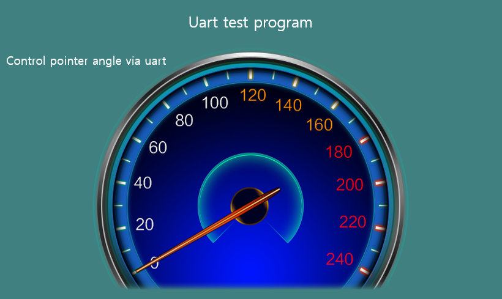

シリアル通信の例
前の章、通信フレームワークの説明を先に要約すると、シリアル通信は、主に次の4つのポイントがあります。
- データ受信
- データ分析
- データ表示
- データ転送
データ分析部分は、比較的複雑であり、特定の通信プロトコルに応じて変更されるべきです。この章では、理論的な内容について話していないし、いくつかの実際のケースを提供しています。
事例1
ここでは、以前に実装した簡単な通信プログラムを例に説明します。完全なコードは、Sample CodeのUartDemoプロジェクトで確認することができます。達成しようとする最終的な効果は、ディスプレイのメーターの回転を制御するために、シリアルポートを介してコマンドを送信することです。UIレンダリングは、次のとおりです。

メーターの回転を制御するには、3つの位置だけを変更します。
1) 先に紹介したプロトコルの形式を再見、ここに0x0001の値に対応する独自のプロトコルコマンドCMDID_ANGLEを追加します。
| Protocol header(2bytes) | Command(2bytes) | length of data(1byte) | data(N) | checksum(1byte option) |
|---|---|---|---|---|
| 0xFF55 | 0x0001（See belowCMDID_ANGLE） |
1 | angle | checksum |
プロトコルデータ構造に1つの変数を追加します。ProtocolData.hを参照してください。
/******************** CmdID ***********************/
#define CMDID_POWER 0x0
#define CMDID_ANGLE 0x1 // new command ID
/**************************************************/
typedef struct {
BYTE power;
BYTE angle; // Added variable to save pointer angle value
} SProtocolData;
2) 以前に定義されたプロトコルの形式を使い続けており、プロトコル解析部を変更する必要がありません。procParseからCmdID値のみを処理します。
/**
* Parse each frame of data
*/
static void procParse(const BYTE *pData, UINT len) {
// CmdID
switch (MAKEWORD(pData[3], pData[2])) {
case CMDID_POWER:
sProtocolData.power = pData[5];
break;
case CMDID_ANGLE: // New part, save angle value
sProtocolData.angle = pData[5];
break;
}
// Notify protocol data update
notifyProtocolDataUpdate(sProtocolData);
}
3) プロトコルデータを受信するアクティビティのコールバック関数を見てみましょう。logic/mainLogic.ccを参照してください。
static void onProtocolDataUpdate(const SProtocolData &data) {
// Serial data callback function
// Set the rotation angle of the pointer
mPointer1Ptr->setTargetAngle(data.angle);
}
上記のプロセスを完了した後、MCUを介して対応するコマンドを画面に転送するだけでメーターの回転を見ることができます。簡単さのために、このプログラムでは、チェックサム検証を実行していないプロトコルデータは、次のとおりです。
protocol header CmdID length of data angle data
0xFF 0x55 0x00 0x01 0x01 angle
CommDef.hファイルでDEBUG_PRO_DATAマクロを開き、受信したプロトコルデータを出力することができます。

この時点で、シリアルポートは、データ受信--->データ分析--->データ表示として1つのコマンドの処理が完了しました。
最後に、シリアルポートデータ転送をシミュレートしてみましょう。提供するプログラムでタイマーが実行され、データ転送が2秒ごとにシミュレーションされます。
static bool onUI_Timer(int id) {
// Simulate sending serial data
BYTE data = rand() % 200;
sendProtocol(CMDID_ANGLE, &data, 1);
return true;
}
上記のコードは、実際の角度値の設定をシミュレートするためのものです。ボードで通信シリアルポートのTXとRXを短絡させて自発送受信を実装することができ、メーターが回転するのを見ることができます。 ここまでのシリアルポートデモプログラムの紹介が完了しました。開発者は、デモプログラムをコンパイルして、マシンに燃焼して効果を確認することができます。次に、これをベースに、いくつかのプロトコルを追加して、テストして、全体の通信プロセスに慣れましょう。